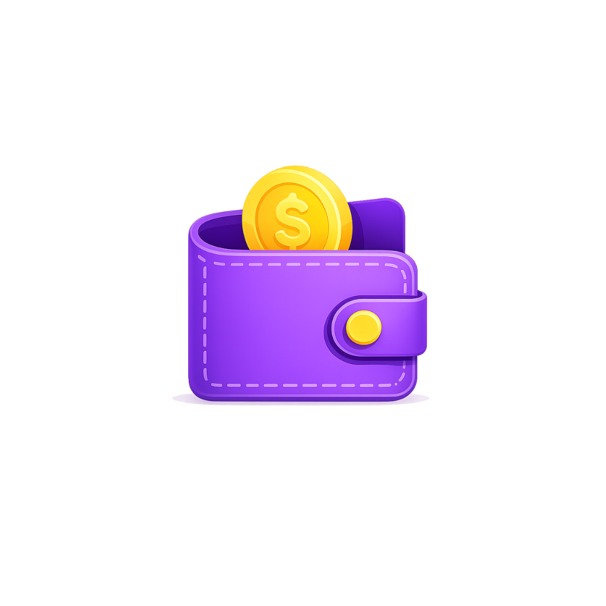

Politique de confidentialité · Mise à jour : août 2026
CoinCache ne collecte, ne transmet et ne stocke aucune donnée personnelle sur un serveur. Tout reste sur votre téléphone, sans exception.
CoinCache est une application de gestion de budget entièrement locale. Elle ne dispose d'aucun serveur, ne crée aucun compte en ligne et n'établit aucune connexion réseau pour transmettre vos informations.
Nous ne collectons, ne consultons et ne partageons aucune des données suivantes :
L'application peut être utilisée sans fournir la moindre information personnelle. Le prénom et le code de verrouillage sont proposés lors de la configuration initiale, mais restent entièrement facultatifs.
Ces éléments, lorsqu'ils sont renseignés, ne servent qu'au fonctionnement local de l'application : personnaliser l'affichage et protéger l'accès sur l'appareil. Ils peuvent être modifiés ou supprimés à tout moment depuis les paramètres.
L'ensemble de vos données est enregistré dans l'espace de stockage privé de l'application, sur votre appareil uniquement. Cet espace est protégé par le système Android et n'est accessible à aucune autre application.
Le code de verrouillage que vous pouvez définir sert uniquement à protéger l'accès à l'application sur votre appareil. Il n'est jamais transmis et n'est pas conservé en clair : seule une empreinte cryptographique (SHA-256 avec sel) est enregistrée localement.
Le déverrouillage par empreinte digitale est désactivé par défaut. Si vous choisissez de l'activer, l'authentification est gérée par le système Android : CoinCache ne reçoit ni ne conserve aucune donnée biométrique.
Chaque permission est demandée au moment précis où elle devient utile, jamais au démarrage de l'application.
CoinCache vous permet d'exporter vos données au format JSON ou CSV. Ces fichiers sont créés à votre demande et enregistrés à l'emplacement de votre choix sur votre appareil. Ils vous appartiennent entièrement ; leur conservation et leur éventuel partage relèvent de votre seule responsabilité.
CoinCache n'intègre aucun service d'analyse, aucune publicité et aucun outil de suivi. Aucune bibliothèque tierce présente dans l'application ne transmet de données vers l'extérieur.
CoinCache s'adresse aux personnes majeures et ne collecte aucune donnée, quel que soit l'âge de l'utilisateur.
Cette politique pourra être mise à jour si l'application évolue. Toute modification sera publiée sur cette page, avec une date actualisée.
Pour toute question relative à cette politique de confidentialité : ayoubmhb13@gmail.com
CoinCache does not collect, transmit or store any personal data on a server. Everything stays on your phone, without exception.
CoinCache is a fully local budgeting application. It has no server, creates no online account and makes no network connection to transmit your information.
We do not collect, access or share any of the following:
The app can be used without providing any personal information at all. The first name and the lock code are offered during the initial setup, but both remain entirely optional.
When provided, these are used solely for the local operation of the app: personalizing the display and protecting access on the device. They can be changed or removed at any time from the settings.
All your data is saved in the application's private storage, on your device only. This space is protected by the Android system and is not accessible to any other application.
The lock code you may set is used solely to protect access to the app on your device. It is never transmitted and is not stored in plain text: only a cryptographic hash (SHA-256 with salt) is kept locally.
Fingerprint unlocking is disabled by default. If you choose to enable it, authentication is handled by the Android system: CoinCache neither receives nor stores any biometric data.
Each permission is requested at the exact moment it becomes useful, never at app startup.
CoinCache lets you export your data in JSON or CSV format. These files are created at your request and saved to the location of your choice on your device. They belong entirely to you; storing and sharing them is your sole responsibility.
CoinCache includes no analytics, no advertising and no tracking tools. No third-party library within the application transmits data externally.
CoinCache is intended for adults and collects no data whatsoever, regardless of the user's age.
This policy may be updated as the application evolves. Any change will be published on this page along with a revised date.
For any question regarding this privacy policy: ayoubmhb13@gmail.com